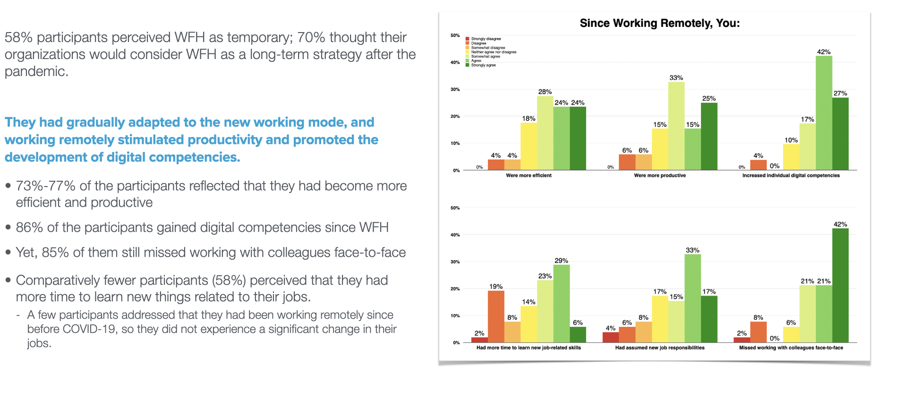

UXR Project - Pandemic Learning Agility
OVERVIEW
This is a research-focused project aiming for understanding the learning agility of Learning & Development professionals and providing foundational instruction on the training design.
problem
Throughout 2020 and 2021, almost every organization evolved and shifted to address the COVID-19 pandemic. Organizations’ learning & development (L&D) department underwent drastic changes due to working-form-home (WFH). play a pivotal role in transitioning and in envisioning and implementing changes within the organization.However, there is little primary research on the learning agility of L&D professionals in life sciences sector. Understanding it was essential and urgent for supporting L&D professionals’ work and potentially critical to the survival and growth of organizations.
Overarching Research questions:
- How did L&D professionals in the life sciences sector perceive and respond to the changes in their work environment during the COVID-19 pandemic?
- How did L&D professionals in the life sciences sector demonstrate learning agility during remote working?
My role
Lead researcher of the research team(2-4 researchers and 2 industry consultants)
target audience
Trainers and educators who serve the companies in the life sciences field, e.g., pharmaceutical companies, medical device manufacturing companies, biotechnology companies.Timeline
September 2020 - December 2021Process
Methods
We adopted a mixed method to approach the research questions:
Literature review – to define the scope of the study and to construct the framework
Qualitative interviews – to extract key insights from experienced practitioners
Quantitative survey – to validate preliminary findings with a representative sample
findings


key takeaways
- They reported generally positive perceptions towards organizations’ responses to COVID-19.
- They perceived high productivity and increased digital competencies during working remotely.
- They reported upskilling and reskilling opportunities due to working from home and in preparation for virtual training.
- Video conference tools, tools to engage customers, and tools to help learners with information recall were the most frequently used technologies and were perceived to be the most important.
- They all believed a new normal would occur after COVID-19.
- They did not perceive a major change under the way in a short-term, they all perceived that major changes would occur in a long-term.
- Elements of learning agility were demonstrated by most participants in response to a highly disruptive crisis, when working mode abruptly shifted.